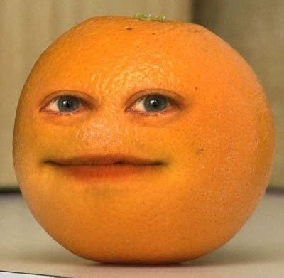

마몽드 오렌지 크리미 틴트...... 아임미미 컬러패턴 팔레트 001 코랄패턴.... 머지 더 퍼스트 펜 아이라이너 커피번.....
............인간오 렌지?🍊
전문적인 퍼스널 컬러 테스트를 받은 적은 없지만 누가 봐도 웜톤인건 확실하다. 봄웜이나 갈웜 중 하나 일 것이다. 지금은 쿨톤의 시대. 오렌지 톤 색조화장품을 사러 웹사이트에 들어가보면 색조화장품 상단 이미지에는 모두 분홍.....진분홍...마젠타..보라...... 요즘에는 토끼혀 립이 유행이라나 뭐라나... 웜톤 화장품의 색상 선택지도 점점 줄어드는 것 같다. 웜톤의 자리는 점점 좁아지고 있다. 언제부터인지는 모르겠으나 대한민국에 쿨톤피플들이 정말 많아졌다. 예전에는 쿨톤이라고 하면 굉장히 희귀한 느낌의 퍼스널 컬러였으나 이제는 쿨톤이 대세인가보다. 정말 쿨톤 밭이다! 여기가 겨울나라인지....엘사들이 많다. 이제는 웜톤이 희귀해진 대한민국이 아닐까?
(지금은 mbti, 혈액형처럼 퍼스널 컬러는 첫만남 스몰토크가 되었다.) 친구들과 모여서 수다를 떨던 중 퍼스널컬러에 대한 이야기를 처음 들었다. 나는 퍼스널 컬러라는 것을 한번도 들어보지 못했기에 나에겐 굉장히 새로운 세계로 다가왔다. 내 옆에는 퍼스널컬러 테스트를 받고 온 한 친구가있었다.
(엘사, 18살, **고등학교 2학년, a.k.a 얼음공주)
그 친구는 굉장히 하얀 아이였었는데 엘사라고 부르겠다. 엘사는 자신은 쿨톤이 나왔다며 들뜬 목소리로 자랑했다. 그녀는 쿨톤의 끝판왕이었다. 핑크를 너무 좋아했고 거의 핑크를 찬양하던 친구였다. 거의 마젠타-보라 느낌의 틴트를 바르던 엘사친구.... 조금이라도 노란끼가 섞인 색이 가까이 있으면 혐오하던 엘사친구......
그때의 나는 핑크가 정말 어울리지 않던 사람이기 때문에 핑크라는 게 미지의 영역같이 느껴져서 쿨톤 친구가 정말 부러웠었던 기억이 난다. ‘하얀 사람들은 좋겠다 핑크색도 어울리고....’ 대충 이런 생각이었던 것 같다.( 내가 까무잡잡했던 편이라 하얀사람에 대한 동경이 있었던 것 같다.)
웜톤이 즐비하던 시절 웜톤사이에서의 쿨톤은 보석같은 존재였지만, 쿨톤이 많은 지금 웜톤은 무시받는 느낌이 되었다. (쿨톤부심이라는 단어도 생겨났다)하지만 나는 나의 웜톤이 좋다. 차가운 세상을 녹여줄수 있는 봄바람같은 색이 어울린다는 것에 나는 기분이 좋다!
사람들에게는 여러 이미지가 존재하는데 ,나는 웜톤이라는 부드러운 이미지가 참 좋고 나에게 어울린다고 생각한다. 그저 화장품을 살 때 웜톤 ,특히 나같이 오렌지만 쓰는 사람들의 선택지가 줄어드는 것에 슬픔을 느낄뿐... 사실 퍼스널 컬러는 퍼스널 컬러일 뿐이고, 사실 자신이 원하는 색을 마음대로 발라도 전혀 문제될 것이 없다. 그리고 모든 피부 컬러는 아름답고 그만의 매력이 있으므로 과거의 나같은 사람들에게 자신의 톤을 사랑하라고 말해주고싶다.
😻😻😻😻